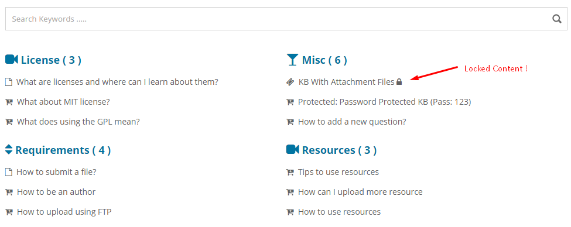
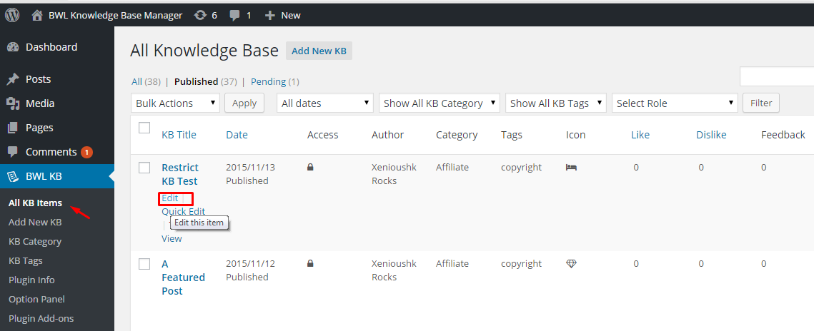
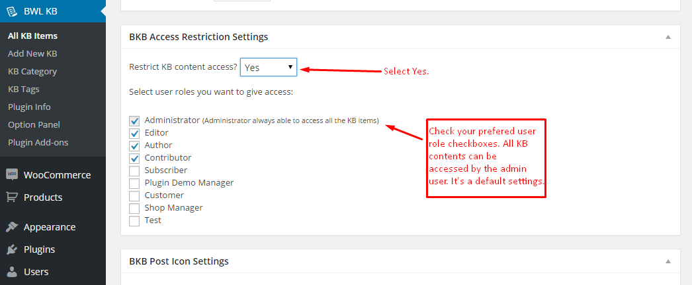
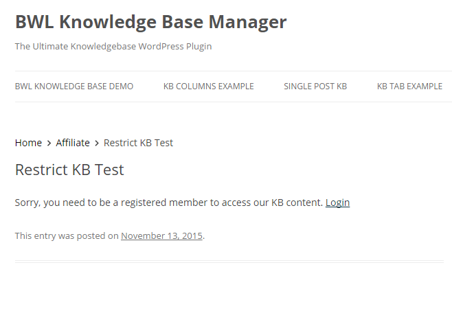
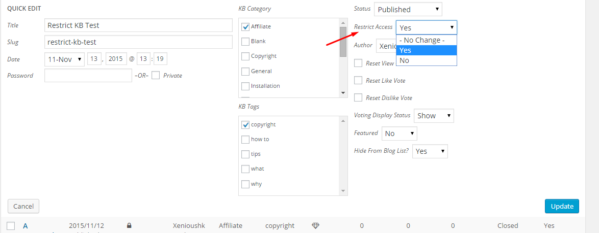
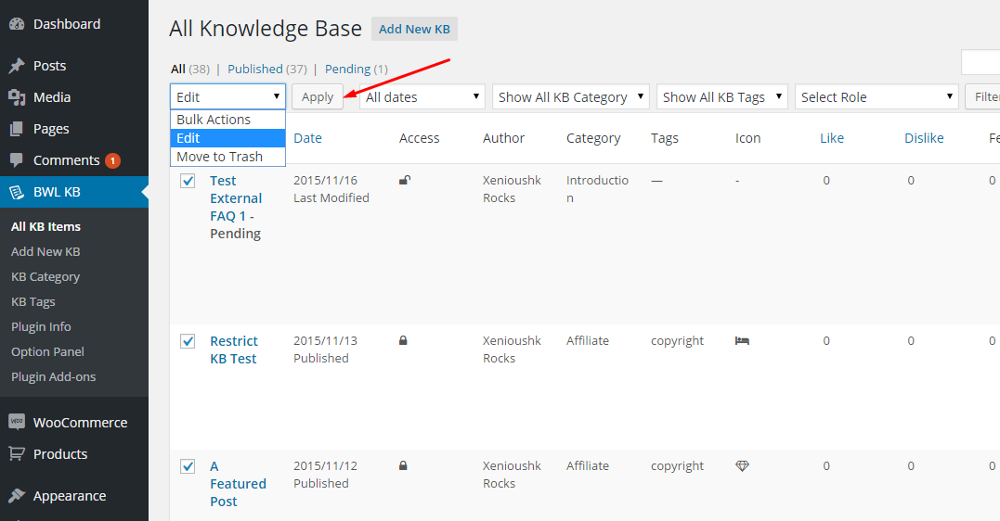
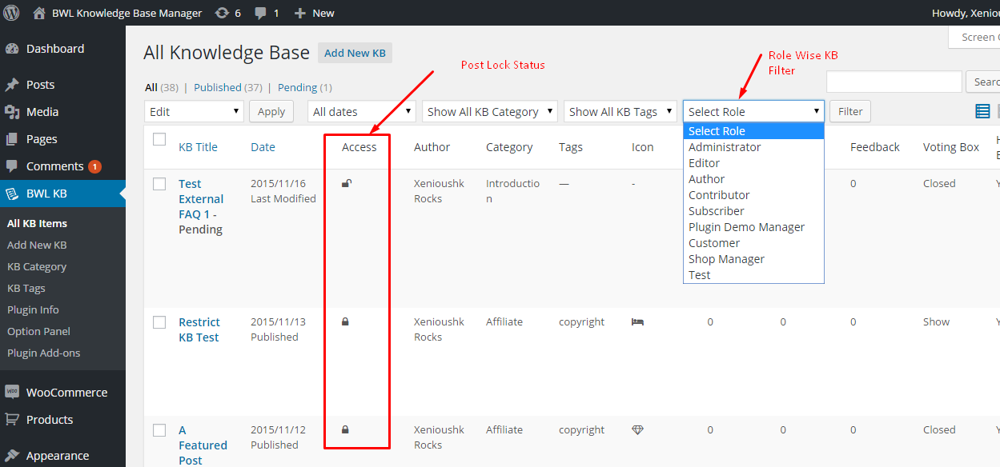
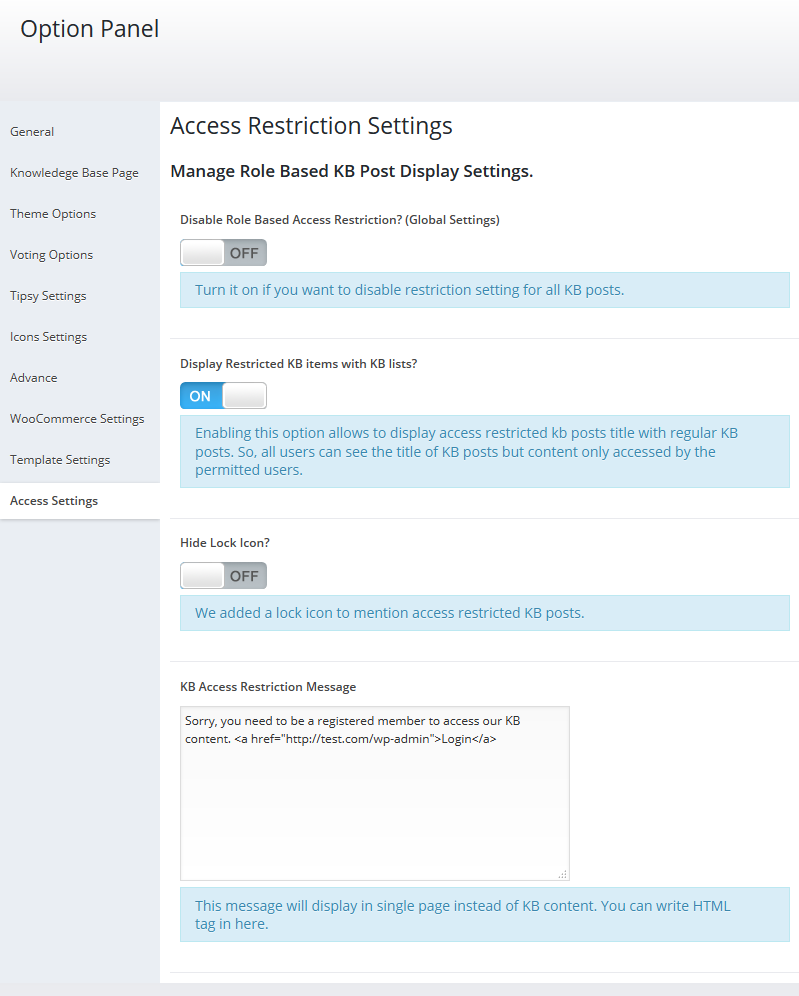

Note:
Not sure about country and language code? Get your Country Code and Language code.
If you want any support, Please feel free to contact me via my profile page https://codecanyon.net/user/xenioushk.
Ajaxified FAQ Search is a powerful addon for BWL Advanced FAQ Manager that allows you're user to find Frequently Ask Questions quickly & easily from you're website.
This addon comes with 25+ animated modal window with sticky button for the best user experience(UX). Plugin comes with almost zero configruation and zero coding requirement feature.
Addon also brings extensive option panel that allows you to configure search window settings according to you're need. You can set window color , Turn ON/OFF search sticky button, Change sticky button colors, set Pagination, set animation and many more.

Are you looking for a way to manage and restrict knowledge base contents for specific types of users on your site? Restrict KB Access by User Role - Knowledgebase Addon provides that easy and awesome option to secure your knowledge base contents from global access.
Addon provides you with premium and flexible settings. With just a few clicks, you can modify or control the access to your knowledge base contents. You can hide all restricted knowledge base contents from global users, or you can display them with a small lock icon with a title to notify them about restricted items.
Addon has an extensive options panel that allows you to manage global restriction settings, restricted item display settings, lock icon display settings, and custom message for locked content settings. Addon automatically manages your sidebar knowledge base contents, related knowledge base contents, and custom knowledge template contents.
Addon comes with Quick/Bulk and custom meta box options to set user roles. Administrator users can access all contents by default, and you can add more user roles with just a few clicks.
Checkout plugin outlook in WordPress site-

You need to install BWL Knowledge Base Manager Plugin to use "Restrict KB Access by User Role Addon". Minimum version 1.0.9 required.

- Once installation has been completed successfully,
Addon automatically start handling Knowledge Base categories, tags and
single post locked contents. Here goes the step by step process to lock a Knowledge Base Post.
Go to "All KB Items" and select A Knowledge Base post that you want to lock.

In bottom of the Edit Page, you will find a section "BKB Access Restriction Settings". In that section
you
will
get options to set Knowledge base post access restriction settings. Finally click save/update button.

Restriction Output:

You can also use Quick/Bulk Edit option to set restriction for multiple posts. To do this go to "All KB
Items"
section and
then when you put your mouse on a post you will get 'Quick Edit' link. Click on it and you will get
option
to
set
Access Restriction. Select
your preferable option and click update.

For Bulk Edit, select multiple post and then click 'Edit' from top of the menu and click "Apply". You
will
get
option to set Access Restriction. Select
your preferable option and click update.

You can filter posts by user role from Administrator panel. Which gives you a nice overview about user role based post access. Also, you can see the Knowledge Base post locked/unlocked status from custom column. 
You can easily manage restriction from option panel. You can temporarily disable restriction for all
Knowledge Base posts, display restricted posts with other KB posts, show/hide 'Lock Icon' and set custom
message
for locked content. It's super easy to use.

Ajaxified FAQ Search WordPress Plugin offers amazing translation feature. Besides the English, you can easily translate the plugin text into other languages. Check following steps to translate "Ajaxified FAQ Search" WordPress plugin.
Step 01: To translate the plugin texts, please download and install Poedit software in your computer. Here goes the download link- https://poedit.net/download
Step 02: Next, navigate to /wp-content/plugins/bwl-advanced-faq-manager/lang/. You will get a file named en_EN.po.
Step 03: Our Plugin text-domain is 'afs-addon'. Now, we want to translate our theme text in to Dutch language. So, copy en_EN.po file and rename it as afs-addon-de_DE.po
Step 04: Now, open that newly created 'afs-addon-de_DE.po' file using Poedit software. You will get all the plugin texts in there and you just need to add appropriate translated text in Translation box.
Step 05: Finally, save the file and you will get 'afs-addon-de_DE.mo' file inside languages folder.
Not sure about country and language code? Get your Country Code and Language code.
You need to install BWL Advanced FAQ Manager Plugin to use "Ajaxified FAQ Search - Advanced FAQ Addon".
If you modified any files of plugin, please take a backup before update all files and folder. We highly recommend to take backup of language files.
Upgrading from 1.1.7 to 1.1.8
2015, November, 18 - v 1.0.0
- Initial release